师资力量
团队拥有两位老师，具有丰富的教学经验和浓厚的学术研究兴趣，提供优质的学术资源和学术指导。
邵艳秋，博士、北京语言大学信息科学学院教授、博士生导师。团队核心导师，毕业于哈尔滨工业大学计算机科学与技术学院，获得计算机应用专业博士学位，北京大学计算语言学研究所博士后。中国中文信息学会计算语言学专业委员会委员。主要研究方向为自然语言处理、计算语言学。近年来主持国家自然科学基金、教育部人文社科基金、国家语委“十二五”科研规划重点项目，博士后科学基金、校内重大专项等课题，入选北京语言大学中青年骨干基金支持计划，在国内外会议和期刊上已发表论文60余篇。
李炜，博士、讲师。团队年轻力量，毕业于北京大学信息科学技术学院，获得计算机软件与理论专业博士学位，主要研究方向为智能中医、数字人文、自然语言处理。在国际顶级会议ACL、EMNLP、AAAI、IJCAI、CIKM等上发表论文了十余篇，以共同作者身份发表的论文《SGM: Sequence Generation Model for Multi-label Classification》获得COLING2018最佳论文奖。目前谷歌学术引用量1400+。
部分论文：
 Modeling the Stock Relation with Graph Network for Overnight Stock Movement Prediction. IJCAI 2020
Modeling the Stock Relation with Graph Network for Overnight Stock Movement Prediction. IJCAI 2020
 Coherent Comment Generation for Chinese Articles with a Graph-to-Sequence Model. ACL 2019
Coherent Comment Generation for Chinese Articles with a Graph-to-Sequence Model. ACL 2019
 Multi-level Gated Recurrent Neural Network for dialog act classification. COLING 2016
Multi-level Gated Recurrent Neural Network for dialog act classification. COLING 2016
专业背景
团队学生背景多元，文理交叉，融合研究。有计算机科学与技术、语言智能与技术、语言学及应用语言学专业的学生，能跨学科跨领域思考，在不同方向上展开研究，具有较高的解决问题的能力。
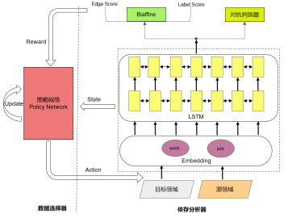 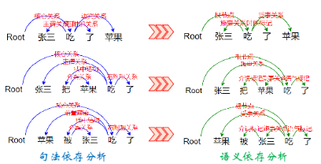
跨领域语义依存分析器 从句法依存分析树到语义依存分析图
学术科研
课题组科研经费充足，科研成果较为丰富,每年有近十篇论文发表在国内外NLP领域相关会议、期刊。2022年，团队成员曾在CCF国际自然语言处理与中文计算会议(NLPCC)、汉语词汇语义学国际研讨会(CLSW）、中国计算语言学大会（CCL）等知名学术会议上发表论文和作报告，交流团队学术研究成果，分享研究经验，拓宽学术视野，多名学生成功申请校级研究生创新基金项目。
2022年学术成果及获奖：
 MCER: A Multi-domain Dataset for Sentence-Level Chinese Ellipsis Resolution.Jialu Qi,Yanqiu Shao,Wei Li,Zizhuo Shen.NLPCC2022
MCER: A Multi-domain Dataset for Sentence-Level Chinese Ellipsis Resolution.Jialu Qi,Yanqiu Shao,Wei Li,Zizhuo Shen.NLPCC2022
 Research on Sentence Alignment of Ancient and Modern Chinese based on Reinforcement Learning.Kuai Yu,Yanqiu Shao,Wei Li.CCL 2022
Research on Sentence Alignment of Ancient and Modern Chinese based on Reinforcement Learning.Kuai Yu,Yanqiu Shao,Wei Li.CCL 2022
 《二十四史》古代汉语语义依存图库构建.黄恬,邵艳秋,李炜.CCL 2022
《二十四史》古代汉语语义依存图库构建.黄恬,邵艳秋,李炜.CCL 2022
 针对古代经典文献的引用查找问题的数据构建与匹配方法.李炜,邵艳秋,毕梦曦.CCL 2022
针对古代经典文献的引用查找问题的数据构建与匹配方法.李炜,邵艳秋,毕梦曦.CCL 2022
 A Study on the Recovery of Omitted Constituents in Chinese Elliptical Sentences.Han Yan,Yiran Zhao,Peipei Sun,Yanqiu Shao.CLSW 2022
A Study on the Recovery of Omitted Constituents in Chinese Elliptical Sentences.Han Yan,Yiran Zhao,Peipei Sun,Yanqiu Shao.CLSW 2022
 Semantic Dependency Analysis of Special Sentence Patterns in Ancient Chinese.Xuan Chen,Yanqiu Shao.CLSW 2022
Semantic Dependency Analysis of Special Sentence Patterns in Ancient Chinese.Xuan Chen,Yanqiu Shao.CLSW 2022
 Research on the Subjective Quantitative Construction “Bu Jiu X(Ma)”.Xuan Chen, Yanqiu Shao.CLSW 2022
Research on the Subjective Quantitative Construction “Bu Jiu X(Ma)”.Xuan Chen, Yanqiu Shao.CLSW 2022
 现代汉语省略句数据集构建及判别研究.周姝含,邵艳秋.CLSW 2022
现代汉语省略句数据集构建及判别研究.周姝含,邵艳秋.CLSW 2022
 半监督跨领域语义依存分析技术研究.毛达展,邵艳秋.《中文信息学报》2022
半监督跨领域语义依存分析技术研究.毛达展,邵艳秋.《中文信息学报》2022
 毛达展《基于领域自适应的语义依存分析方法研究》获得北京语言大学校级优秀硕士毕业论文，邵艳秋教授获得优秀导师。
毛达展《基于领域自适应的语义依存分析方法研究》获得北京语言大学校级优秀硕士毕业论文，邵艳秋教授获得优秀导师。
此外，团队紧跟学术前沿，积极邀请相关领域的专家学者展开深入的学术交流和合作。2022 - 2023第一学期，邀请了北京大学计算语言学研究所的李素建老师做《Research on Discourse Parsing:from the Dependency View》学术报告，北京大学前沿交叉学科研究院大数据中心的高润东博士做《基于自然语言的图像生成模型》的专题分享，详细介绍了多模态前沿进展。
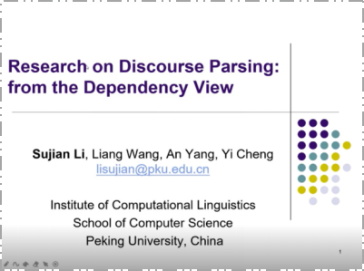 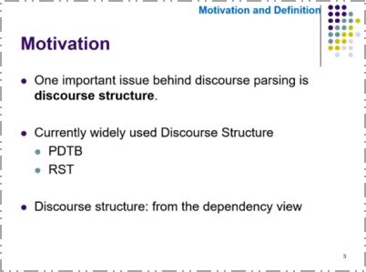
北京大学李素建老师做《Research on Discourse Parsing:from the Dependency View》学术报告
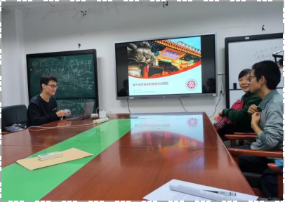 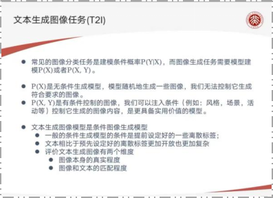
北京大学高润东博士做《基于自然语言的图像生成模型》的专题分享
组内活动
团结紧张、严肃活泼，活动丰富，科研与娱乐结合是团队特色。组内定期举行各类团体活动，如每周组会、读书会、年会、毕业答谢宴、聚餐、运动等。发挥“传帮带”作用，帮助新生融入学校生活，快速进入科研状态。
团队注重身心健康，不定期组织羽毛球、乒乓球、飞盘等运动，缓解学业压力，增强身体素质，增进团队互动。（Ps：邵老师很擅长乒乓球，咱们组能薅私教课哈哈~）这些活动为大家提供了一个积极、开放、充满创造力的环境，促进团队和个人成长和发展，为我们的研究工作提供了坚实的基础和支持。
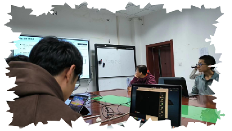
每周组会 读书会
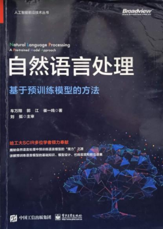 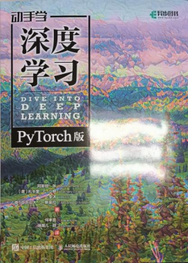
读书会学习和讨论书籍
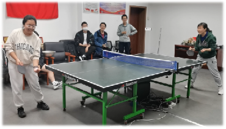 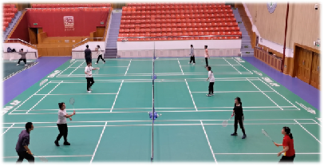
师生打乒乓球、羽毛球
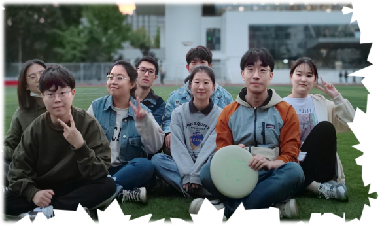 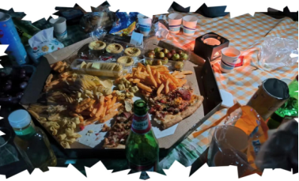
师门玩飞盘、聚餐等
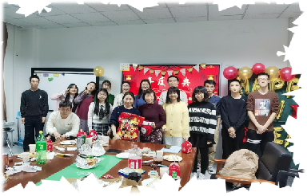 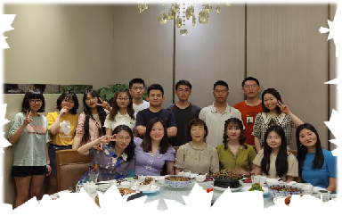
年会 毕业答谢宴
毕业去向
在亲和温柔的邵老师和专业扎实、科研动力十足的小李老师的带领下，学生自驱力较强，科研资源丰富，实习资源优质，就业具有一定的竞争力。团队学生发展良好，毕业去向读博深造，进入政府机关和中国银行、人民网、兴唐通信等国企事业单位，更多是进入腾讯、小米、美团、百度、大疆、科大讯飞等一线互联网企业。
硕士毕业生与邵艳秋教授的毕业合影
热烈欢迎有志于自然语言处理研究的
计科、语智、语用专业的小伙伴：
加入我们吧！